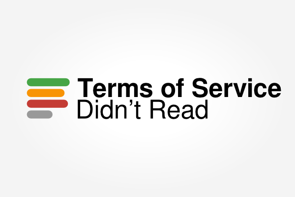

① Les Conditions Générales d’Utilisation sont trop longues pour être lues
Comparaison des longueures des CGU d’Apple et d’iCloud avec des pièces de théâtre. Données: versions en anglaisExtract from Lorrie Cranor, The Cost of Reading Privacy Policies. http://lorrie.cranor.org/pubs/readingPolicyCost-authorDraft.pdf
Terms of Service; Didn’t Read logo by Jan-Christoph Borchardt